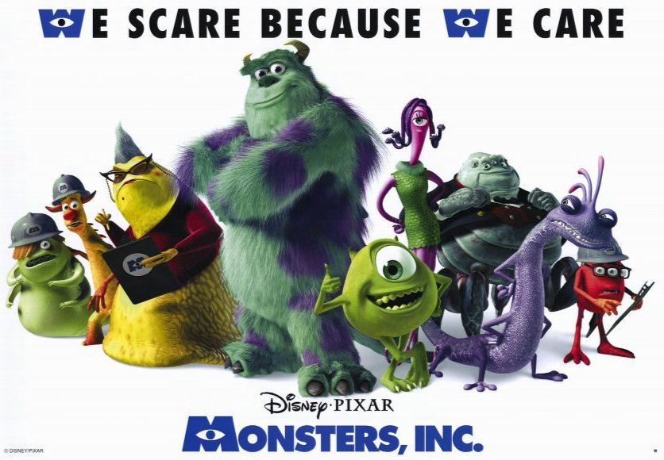

Pixar & Cuộc Hành Trình Kỳ Diệu
Pixar khởi đầu năm 1979 như là nhóm Đồ Họa, trực thuộc hãng Lucasfilm. Lĩnh vực chính của nhóm là phần cứng máy tính. Nhóm được mua lại bởi Steve Jobs – đồng sáng lập Apple vào năm 1986. Studio Pixar đeo đuổi giấc mơ sản xuất phim hoạt hình dài làm bằng máy tính. Vào năm 1995, Pixar phát hành Toy Story, như là một sự khẳng định cho tuyên ngôn này. Công ty Walt Disney mua lại Pixar vào năm 2006.
Thời kỳ hình thành
Pixar khởi đầu là nhóm Đồ Họa, một trong ba nhóm thuộc bộ phận Máy Tính của Lucasfilm, được trả lương bởi Tiến sĩ Ed Catmull thuộc Học viện Công nghệ New York (NYIT). Ở NYIT, những nhà nghiên cứu lúc đó đã đi tiên phong trong công nghệ đồ họa máy tính và thử nghiệm trên một bộ phim mẫu tên là The Works. Sau khi chuyển đến Lucasfilm, nhóm nghiên cứu tạo ra mô hình người cử động bằng đồ họa vi tính đầu tiên, gọi vui là “Giáo sư Chuyển Động”, từ đó cho phép những họa sĩ hoạt hình truyền thống sử dụng máy tính để thiết lập hành động cho mô hình.
Nhóm nghiên cứu đã bắt đầu làm việc về mảng hiệu ứng đặc biệt cho hãng Industrial Light & Magic. Sau nhiều năm, nhóm đã đạt được những cột mốc quan trọng như hiệu ứng trở về quá khứ trong phim Star Trek II: The Wrath of Khan và hiệu ứng hiệp sĩ khung kính màu trong phim Young of Sherlock Holmes. Với 45 thành viên, sau đó, nhóm được Steve Jobs mua lại không lâu sau khi ông này rời hãng Apple. Steve Jobs trả 5 triệu đô la cho Geogre Lucas và đầu tư 5 triệu đô la khác cho Lucasfilm. Đây là một yếu tố góp phần làm tăng doanh thu của Lucas sau khi gặp những khó khăn về tiền bạc sau khi Geogre Lucas ly dị năm 1983, trùng hợp với sự sụt giảm thu nhập đột ngột từ các bản quyền của Star Wars sau khi phát hành Return of the Jedi và bị chèn ép bởi hiệu suất kinh doanh mãnh liệt của phim Howard the Duck. Công ty độc lập mới này đứng đầu là Chủ tịch - Tiến sĩ Edwin Catmull, và Tiến sĩ Alvy Ray Smith - Phó Chủ tịch kiêm Giám đốc điều hành. Steve Jobs làm Chủ tịch và Giám đốc điều hành Pixar.
Ban đầu, Pixar là một công ty phần cứng máy tính cao cấp, sản phẩm chính là Pixar Image Computer, một hệ thống chủ yếu được bán cho các cơ quan chính phủ và y tế. Một trong những nơi mua Pixar Image Computers là Disney Studios đã sử dụng thiết bị này như là một phần của dự án CAPS bí mật của họ, sử dụng máy và phần mềm tùy chỉnh để vẽ hoạt hình 2D một cách tự động hóa, có thể nói đây là một phương pháp hiệu quả. Tuy nhiên Pixar Image Computer đã không kinh doanh tốt. Trong nỗ lực thúc đẩy doanh thu của hệ thống, nhân viên Pixar John Lasseter - người đã tạo ra các hình ảnh trình diễn ngắn, như Luxo, cố gắng thể hiện những khả năng của thiết bị, đồng thời công bố những sáng tạo của mình tại SIGGRAPH, hội nghị lớn nhất của ngành công nghiệp đồ hoạ máy tính.
Khi doanh số bán máy tính của Pixar tụt giảm đe dọa loại công ty ra khỏi ngành kinh doanh, bộ phận hoạt hình của Lasseter bắt đầu sản xuất quảng cáo hoạt hình bằng máy tính cho các công ty bên ngoài. Những thành công ban đầu bao gồm các chiến dịch cho Tropicana, Listerine và LifeSavers. Tháng 4. 1990, Steve Jobs đã bán bộ phận phần cứng của Pixar, bao gồm tất cả phần mềm công nghệ, phần mềm hình ảnh độc quyền cho Vicom Systems và 18 trong số 100 nhân viên của Pixar. Cùng năm, Pixar chuyển từ San Rafael đến Richmond, California. Trong thời điểm này, Pixar vẫn tiếp tục mối quan hệ với Walt Disney Animation Studios, một studio con của công ty Walt Disney, nơi sẽ trở thành đối tác quan trọng nhất sau này. Năm 1991, sau một năm khởi đầu khó khăn khi khoảng 30 nhân viên trong bộ phận máy tính của công ty đã phải chuyển đi (trong đó có cả Chuck Kolstad), Pixar đã ký hợp đồng trị giá 26 triệu đô la với Disney để sản xuất ba bộ phim hoạt hình bằng máy tính, mà phim đầu tiên là Toy Story. Vào thời điểm đó, các lập trình viên phần mềm, những người đã làm nên nhân vật “Giáo sư Chuyển Động” và CAPS, và cũng là bộ phận hoạt hình của Lasseter, những người đã quảng cáo truyền hình và một vài bộ quần áo cho Sesame Street, đã rời Pixar. Mặc dù có tổng thu nhập của các sản phẩm này gộp lại, công ty vẫn bị mất tiền, và Jobs thường muốn bán nó, thậm chí cuối năm 1994, ông đã cân nhắc bán Pixar cho các công ty khác, trong đó có Microsoft. Chỉ sau khi xác nhận rằng Disney sẽ phân phối Toy Story cho kỳ nghỉ năm 1995, Steve Jobs mới quyết định cho Pixar một cơ hội khác. Bộ phim đã thu về hơn 350 triệu đô la trên toàn thế giới. Cuối năm đó, Pixar tổ chức chào bán cổ phần lần đầu cho công chúng vào ngày 29 tháng 11 năm 1995 và cổ phiếu của công ty lúc đó có giá 22 Đô la Mỹ mỗi cổ phần.

Mối quan hệ với Disney
Pixar và Disney đã có những bất đồng sau khi sản xuất Toy Story 2. Phim này tuy được dự định phát hành trực tiếp (không phải là một phần của hợp đồng 3 bộ phim của Pixar) nhưng cuối cùng đã được nâng cấp lên phát hành rạp. Pixar yêu cầu bộ phim được tính vào hợp đồng ba bộ phim, nhưng Disney từ chối. Năm bộ phim đầu tiên của Pixar đã thu được tổng cộng hơn 2,5 tỷ đô la, tương đương với doanh thu trung bình mỗi bộ phim cao nhất trong ngành. Mặc dù cả hai đều có lợi nhuận, Pixar sau đó phàn nàn rằng sự sắp xếp không công bằng. Pixar chịu trách nhiệm sáng tạo và sản xuất, trong khi Disney quản lý tiếp thị và phân phối. Lợi nhuận và chi phí sản xuất được chia ra 50-50, nhưng Disney sở hữu tất cả các câu chuyện, các quyền sử dụng tiếp theo và cũng thu một khoản phí phân phối. Việc thiếu các câu chuyện và các quyền tiếp theo có lẽ là khía cạnh khó xử nhất đối với Pixar và đặt nền móng cho một mối quan hệ gây tranh cãi.
Hai công ty này đã cố gắng để đạt được một thỏa thuận mới vào đầu năm 2004. Hợp đồng mới sẽ chỉ dành cho phân phối, trong đó Pixar nhằm kiểm soát việc sản xuất và sở hữu tài sản của bộ phim. Công ty cũng muốn tự bỏ vốn cho các bộ phim của mình và thu 100% lợi nhuận, chỉ trả cho Disney khoảng 10 đến 15% phí phân phối. Quan trọng hơn, như một phần của thỏa thuận phân phối với Disney, Pixar yêu cầu kiểm soát các bộ phim đã được sản xuất theo hợp đồng cũ, bao gồm The Incredibles và Cars. Disney cho rằng những điều kiện này không thể chấp nhận, nhưng Pixar quyết không nhân nhượng.
Sự bất đồng giữa Steve Jobs và Michael Eisner (Chủ tịch và Giám đốc điều hành Disney) kéo theo nhiều cuộc đàm phán khó khăn hơn những gì họ nghĩ. Tất cả đổ vỡ hoàn toàn vào giữa năm 2004, với việc Jobs tuyên bố rằng Pixar sẽ tích cực tìm kiếm đối tác khác ngoài Disney. Pixar đã không tham gia đàm phán với các nhà phân phối khác. Sau một thời gian gián đoạn dài, các cuộc đàm phán giữa hai công ty được nối lại sau sự ra đi của Eisner từ Disney vào tháng 9 năm 2005. Để chuẩn bị cho sự chia cắt của Pixar và Disney, Steve Jobs đã tuyên bố vào cuối năm 2004 rằng Pixar sẽ không phát hành phim cho Disney độc đoán vào thời điểm tháng 11, mà chỉ trong những tháng mùa hè. Điều này cho phép Pixar phát hành DVD đi kèm các sản phẩm chính của họ trong mùa mua sắm Giáng sinh. Một lợi ích khác của việc trì hoãn phim Cars là kéo dài thời gian còn lại trong hợp đồng Pixar-Disney để xem mọi thứ sẽ diễn ra như thế nào giữa hai công ty.
Khi Disney mua lại Pixar, hai công ty này đã lập ra một hợp đồng phân phối cho việc phát hành phim Ratatouille năm 2007 đề phòng trong trường hợp việc mua lại sụp đổ sẽ vẫn đảm bảo rằng bộ phim này được phát hành thông qua các kênh phân phối của Disney. (Trái ngược với hợp đồng trước đây, Ratatouille vẫn là một tài sản của Pixar và Disney chỉ nhận được một khoản phí phân phối). Tuy nhiên, việc hoàn thành việc mua lại Pixar của Disney đã hủy bỏ hợp đồng này.
Được Disney mua lại
Disney công bố vào ngày 24 tháng 1 năm 2006 rằng họ đã đồng ý mua Pixar với giá khoảng 7,4 tỷ đô la. Theo thỏa thuận của cổ đông Pixar, việc mua lại sẽ được hoàn tất vào ngày 5 tháng 5 năm 2006. Giao dịch này đã đưa Steve Jobs, cổ đông lớn nhất của Pixar với 50,1%, trở thành cổ đông cá nhân lớn nhất của Disney với 7% và một vị trí mới trong ban giám đốc. Việc nắm giữ Disney của Steve Jobs vượt quá số cổ phần của cựu giám đốc điều hành Michael Eisner, cổ đông lớn nhất trước đó, người vẫn đang nắm giữ 1,7%; Và cả giám đốc Disney - Roy E. Disney, người nắm giữ gần 1% cổ phần của công ty.
Là một phần của thỏa thuận, đồng sáng lập Pixar, John Lasseter, lúc đó là Phó chủ tịch điều hành, trở thành Giám đốc Sáng tạo cho cả Pixar và Walt Disney Animation Studios, cũng như Cố vấn Sáng tạo chính tại Walt Disney Imagineering, thiết kế và xây dựng các công viên giải trí của công ty. Catmull giữ lại vị trí của mình trong vai trò Chủ tịch Pixar, đồng thời trở thành Chủ tịch của hãng phim hoạt hình Walt Disney, dưới quyền Bob Iger và Dick Cook, chủ tịch của Walt Disney Studio Entertainment. Vị trí của Steve Jobs là Chủ tịch kiêm Giám đốc điều hành của Pixar cũng được bãi bỏ, vì ông đã đảm nhiệm vị trí của ban giám đốc Disney.
Sự giám sát của Lasseter và Catmull về cả xưởng phim Disney và Pixar không có nghĩa là cả hai studio đều hợp nhất. Trên thực tế, các điều kiện bổ sung đã được đặt ra như là một phần của hợp đồng để đảm bảo rằng Pixar vẫn là một thực thể riêng biệt, một mối quan tâm mà các nhà phân tích đã bày tỏ, về hợp đồng của Disney. Một trong số những điều kiện đó là các chính sách của Pixar sẽ vẫn còn nguyên vẹn, bao gồm chính sách hợp đồng lao động. Ngoài ra, cái tên Pixar được đảm bảo sẽ tiếp tục, và studio sẽ vẫn đặt ở Emeryville, California với bảng hiệu Pixar. Cuối cùng, thương hiệu của các bộ phim được thực hiện sau sáp nhập sẽ là Disney Pixar (bắt đầu với phim Cars).
Jim Morris, nhà sản xuất WALL-E, đã được bổ nhiệm làm tổng giám đốc Pixar. Ở vị trí mới này, Morris phụ trách việc điều hành các cơ sở và sản phẩm của phòng thu mỗi ngày.